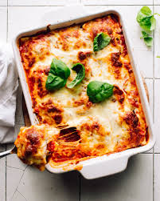

Home
Odin's Lasagna

Description
Lasagna is a type of pasta, possibly one of the oldest types, made of very wide, flat sheets. This recipe is a simple lasagna that is easy to make and tastes great.
Ingredients
- 1 pound ground beef
- 12 lasagna noodles
- 3 cups ricotta cheese
- 1 cup mozzarella cheese
- 1 cup parmesan cheese
- 3 leaves of basil
- 1/2 cup olive oil
- 1/2 cup red wine
- 1/2 cup tomato sauce
- 1/2 cup garlic
- 1/2 cup onion
- 1/2 cup oregano
Steps
- Preheat oven to 350 degrees F (175 degrees C).
- In a large skillet over medium-high heat, brown the ground beef, and season with salt and pepper. Drain off excess fat, and stir in the garlic and onion. Cook and stir until the onion is translucent, about 5 minutes. Stir in the tomato sauce and wine, and simmer for 15 minutes.
- In a large bowl, mix together the ricotta, parmesan, and mozzarella cheeses. In a separate bowl, mix together the egg and basil.
- In a 9x13 inch baking dish, layer the lasagna noodles, alternating with the meat sauce and cheese mixture. Top with the remaining meat sauce, and sprinkle with the mozzarella cheese.
- Bake at 350 degrees F (175 degrees C) for 30 minutes, or until the cheese is melted and bubbly.